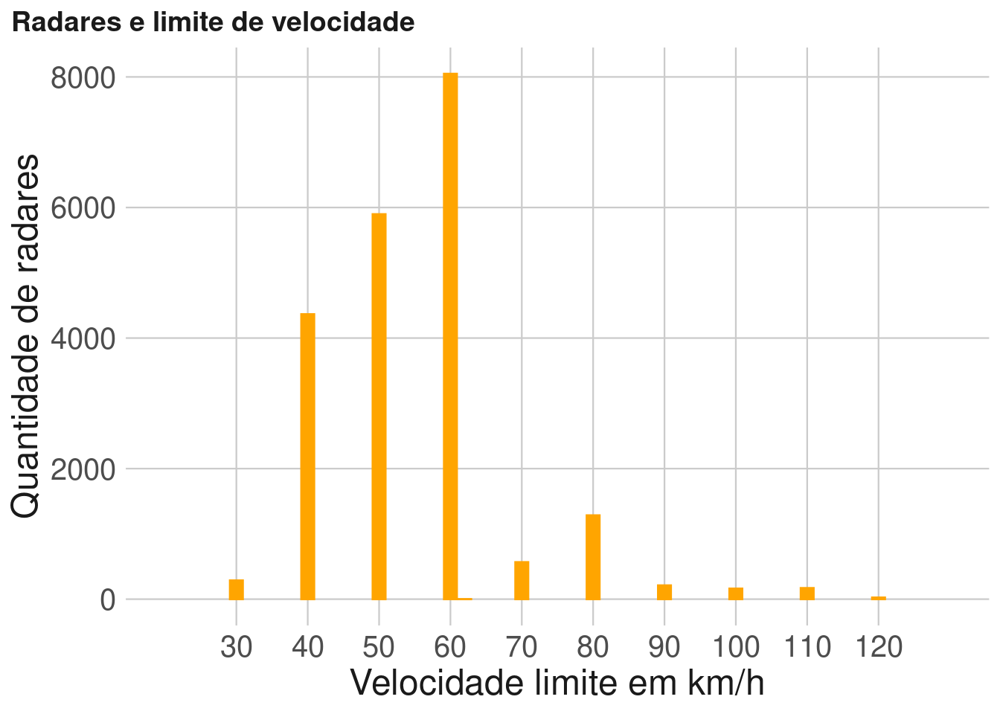

Capítulo 5 Quantidade de radares por limite de velocidade
Esse script foi criado apenas para gerar um gráfico incluído no relatório.
5.2 Construção do gráfico
Primeiramente foi importado os dados sobre os radares.
radar_velo <- read_xlsx("/home/silvana/Downloads/INDICADORES_RADARES_VELOCIDADE_UF (indicador velocidade, infrações, mortalidade)).xlsx", sheet = 2)E então foi feito o gráfico de barras para representar a quantidade de radares por cada limite de velocidade.
filter(radar_velo, VelocidadeNominal != 0 & TipoMedidor == "Fixo")%>%
ggplot(aes(x = VelocidadeNominal))+
geom_bar(color = "orange", fill = "orange")+
scale_x_continuous(limits = c(20,130),
breaks = seq(30,120,10))+
labs(x = "Velocidade limite em km/h",
y = "Quantidade de radares",
title = "Radares e limite de velocidade")+
theme_onsv()+
theme(axis.title = element_text(size = 18))+
theme(axis.text.x = element_text(size = 15),
axis.text.y = element_text(size = 15)) 